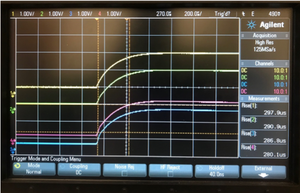
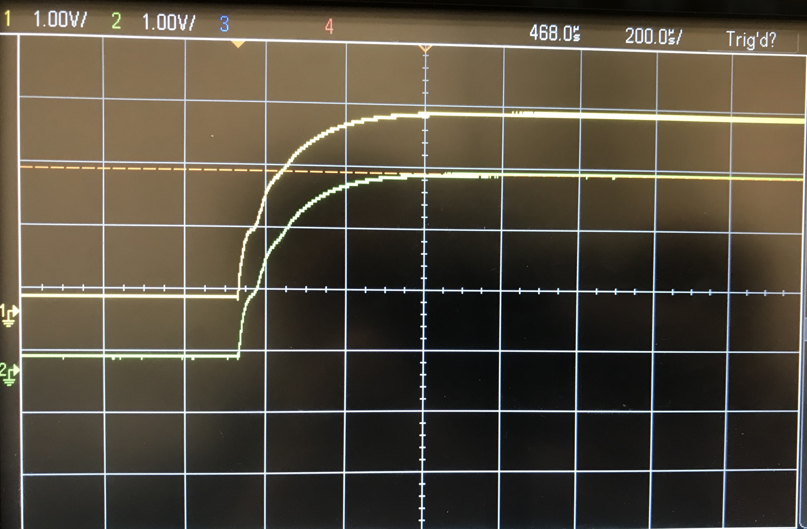

CCM QA
This procedure acts under the assumption that the user is utilizing the pre-built CCM QA setup.
- Turn on both oscilloscopes connected to the LVR
-
Take a master slave CCM pair
- Validate that the pair are both either 1.2, 1.5, or 2.5 V
-
Install the CCM master-slave pair on channels 1 & 2 of the LVR.
Note the following
In the case of a master-slave pair, you CANNOT install 2 masters or 2 slaves on the same 2-channel pair
-
Set the input voltage of the power supply to ~5.5 V
-
Note the wave pattern on the first oscilloscope displaying 4 distinct channels.
Note the following
Note that channels 1 and 2 correspond to the master, where channels 3 and 4 correspond to the slave.

This is an examlpe of a curve for a 1.5 MS CCM. The waveform displayed should be a smooth curve as shown in the figure above.

This is an example of a curve for a 2.5 A CCM. The waveform displayed, you will note, has a slight oscillation. This is to be expected as this is just the representation of the turn-on voltage.

This is an example of a curve for a 1.25 A CCM. The waveform displayed, you will note, has a slight oscillation. This is to be expected as this is just the representation of the turn-on voltage.
Note the following
In addition to similar shapes, ch1&2 (yellow and green) and ch3&4 (blue and red) (if slave is present) should converge to the same amplitude within +/- 3% or so. It may be useful to include a "top" voltage measurement on the display to do this easily.
-
Locate the variable resistor on the master CCM, and note the voltage reading on channel 1 of the second oscilloscope, denoted
Vtop. -
Adjust the variable resistor so the voltage reading of channel 1 corresponds to the voltage of the CCM (i.e. a 1.5 V CCM should have a channel reading of ~1.5 V) as shown below for a 1.5 V CCM

-
After adjusting the variable resistor, go back to the first oscilloscope readings
-
If the waveform displayed is still not smooth, note the following
-
If the bottom two curves ONLY are not smooth, this indicates a problem with the slave
-
If BOTH curves are not smooth, replace the master CCM with a validated master CCM with the same voltage identity.
- If after replacing the curve is smooth and normal, the previous master CCM has a problem
- If after replacing the bottom curve is not smooth, this indicates a problem with the previous master CCM and the current slave CCM
-
-
Once the CCM is fully QAd, place a colored dot labelling its type on the front of the CCM, and a numbered sticker on the back of the CCM to indicate its serial number.
- Once all CCMs in a roll are complete, place the CCMs back into the roll and label the roll
as
XXY#, whereXXdenotes the CCM type (i.e.25, 15, 12),Ydenotes the pairing (A, M, S) and#denotes the serial number (001, 002, ....)
- Once all CCMs in a roll are complete, place the CCMs back into the roll and label the roll
as